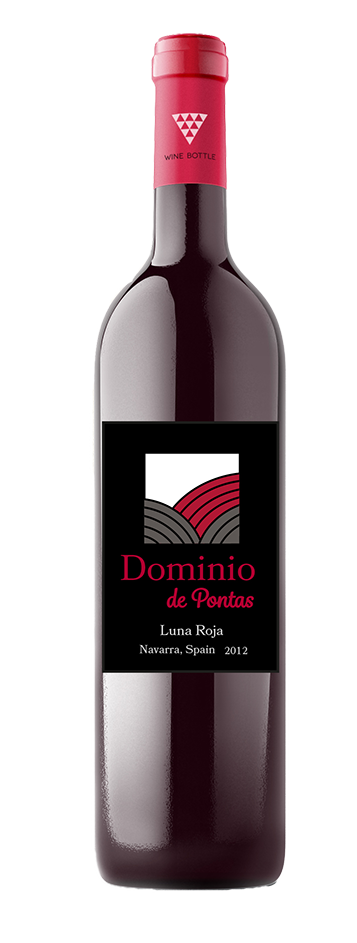
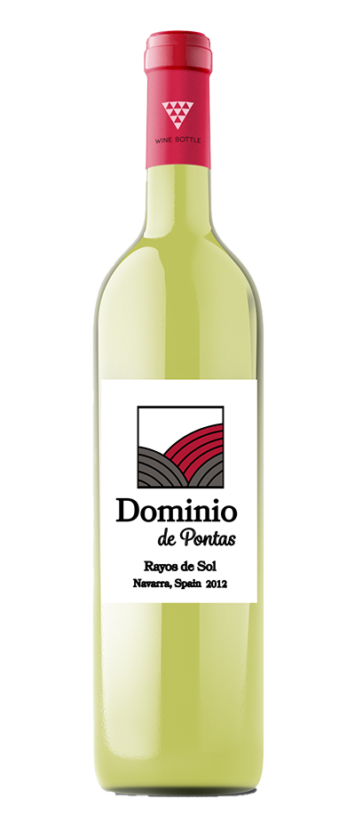
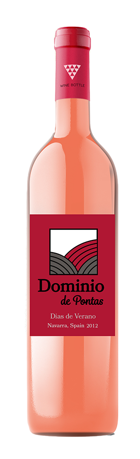

Luna Roja er lavet af druen Tempranillo, der er kendt for sin frugtige smag. Det er en drue som er meget karakteristisk for spansk vin da man klart kan smage den passion der kendetegner spanierne.
Vores rødvin passer perfekt sammen med oksekød eller andet mørkt kød, grundet den fyldige eftersmag af brombær samt en snert af syre.
Om det er middag med vennerne eller en ekstra god aften derhjemme, passer Luna Roja ind.

Rayos de Sol - en syrlig, frisk hvidvin
Rayos de Sol er vores bud på en hvidvin der er lavet af druen Chenin Blanc som er kendt for sin duft af æbler, marcipan og nødder.
Vinen er klar med et grønt skær og en smag med noter af citrus og grønne æbler. Eftersmagen bærer præg af lime og citrus.
Rayos de Sol passer bedst sammen med fisk, da syrligheden komplimenterer smagen fra havet.

Dias de Verano - en sødmefuld delikat rosévin
Dias de Verano er lavet på druen Moscato der giver den en smag af søde bær med en eftersmag af hyldeblomst.
Dias de Verano indbyder til at drikkes afkølet en varm sommeraften i godt selskab.
Den går rigtig godt sammen med salte og søde snacks som f.eks. peanuts, frugt og chokolade.
Den karakteristiske dybe lyserøde tone klæder ethvert glas og gør vinen til et klassisk valg til en aften med veninderne eller en hyggelig aften derhjemme.

Crepusculo - en sødmefuld portvin med tyngde
Crepusculo er lavet på druen Cencibel, som er en såkaldt blå drue. Smagen er frugtrig med en behagelig eftersmag.
Vinen lagres i egetræsfade og har en flot, rubinrød farve.
Den passer godt sammen med desserter eller salte snacks, men kan også sagtens drikkes alene.
Portvinen kan evt. også anvendes som del af en dessert, til marinering eller i en kage.